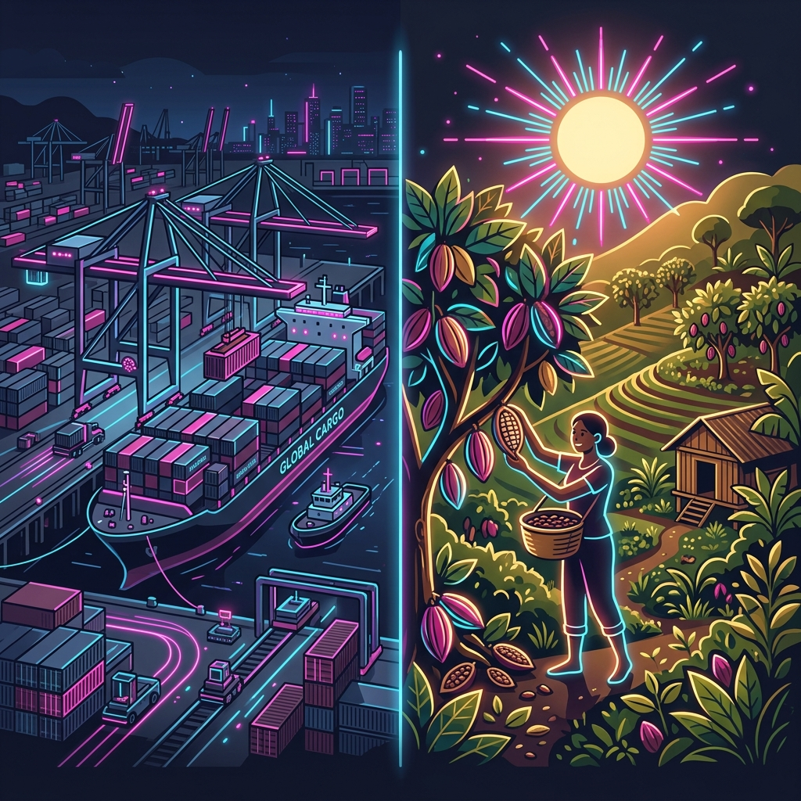
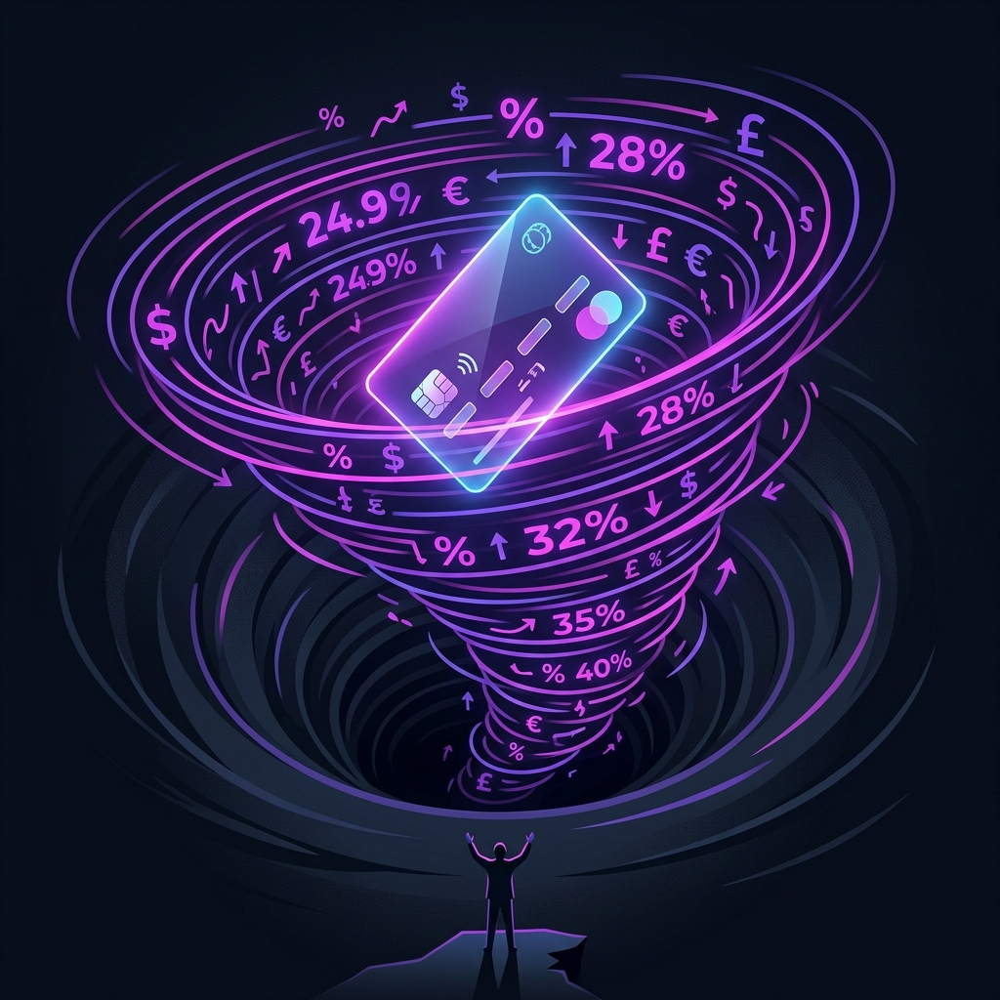
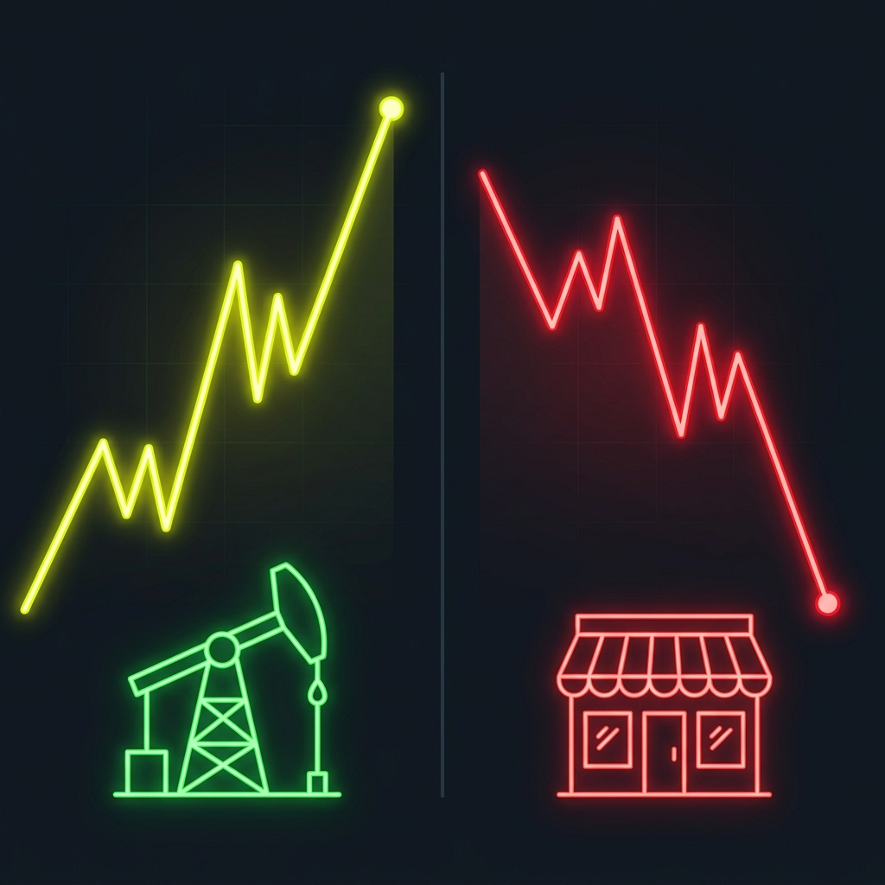
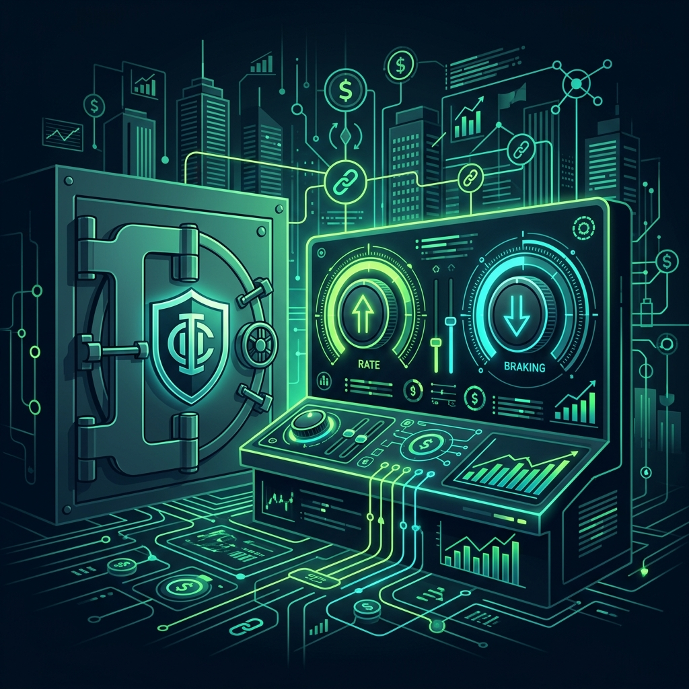
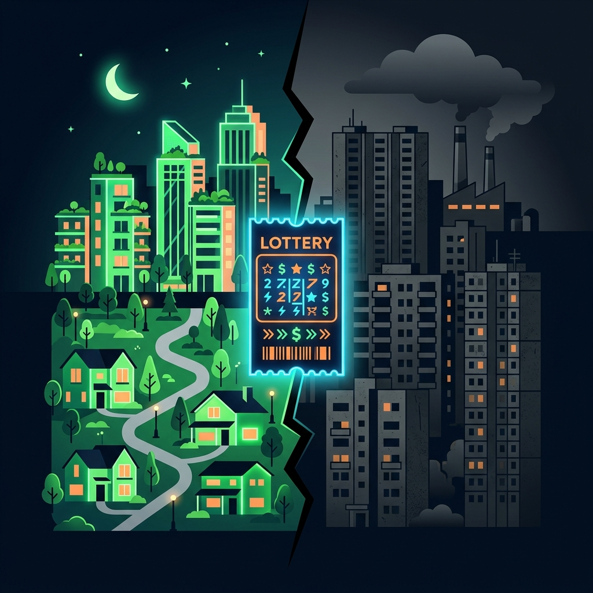

ECON 12 Final Exam Concept Review — a working study guide covering supply shocks, trade, personal finance, investment, banking, macro policy, and inequality. All practice questions and interactive widgets are exam-aligned.
How markets react when unexpected stuff happens, and why some prices go crazy. A sudden supply cut in necessities (inelastic) causes dramatic price spikes because consumers cannot easily reduce demand.
📍 Strait of Hormuz Blockade📍 Wheat & Bread Drought
Key Terms
Elasticity (Price Elasticity of Demand)▼
The measure of how much quantity demanded responds to a price change.
Supply Shock▼
An unexpected event (drought, blockade, pandemic) that suddenly reduces supply, causing an unforeseen price change.
Subsidy▼
Government financial assistance to producers to lower costs and increase supply.
Core Concepts
1Inelastic vs. Elastic Goods in Shocks
Essential / Inelastic (bread, gas): Few substitutes. Supply cut causes disproportionate price spike. Luxury / Elastic (apples): Many substitutes. Price increases cause consumers to switch.
2Global Interdependence
Geopolitical blockades at maritime chokepoints (Strait of Hormuz) cut global oil supply, directly spiking consumer gas prices in Halifax via integrated commodity pricing.
3Price Controls vs. Market Signals
Price Ceilings keep goods affordable but cause shortages, lines, and black markets by suppressing the price signal that encourages production and conservation.
📊 Elasticity Visualizer
Drag the slider to simulate a supply shock. Watch how inelastic goods (gas) spike in price while elastic goods (apples) barely change.
Supply Reduction
0% cut
Gas Price Change
0%
Apple Price Change
0%
Practice Questions
Data Task
A blockade cuts 5% of global oil supply. Halifax gas jumps from $1.45/L to $2.00/L. Calculate the percentage price increase.
38%
5%
27%
Scenario Analysis
During the drought simulation, bread is inelastic but apples are elastic. Why does a 50% supply cut cause a FAR greater than 50% price increase for bread?
Consumers cannot reduce bread consumption, so the full shortage translates to price
Bread producers raise prices deliberately
There are fewer bakeries
Theme C
Free Trade vs Fair Trade

How global trade works, who wins or loses with tariffs, and how retailers use choice architecture (nudges) to influence ethical shopping decisions.
Tariffs on necessities act as a regressive tax -- low-income families spend a larger % of income on basics.
3Positive Externalities of Fair Trade
Premiums fund schools, healthcare, clean water -- benefiting the entire community including non-participants.
🧠 Choice Architecture Demonstrator
Click each card to see how stores use nudges to influence your buying decisions.
💰
Anchoring
A $20 artisan item sits next to a $7.50 Fair Trade bar
The expensive anchor makes $7.50 seem reasonable by comparison. Retailers place premium items beside ethical goods to reduce "sticker shock."
👥
Social Proof
"9 out of 10 students chose the Fair Trade option"
People follow the crowd. Showing that peers choose ethical options creates pressure to conform, boosting Fair Trade sales without forcing anyone.
✅
Default Bias
The $1 Fair Trade donation box is pre-checked
People stick with defaults. Pre-checking the ethical option means most won't uncheck it. This small design choice drives millions in donations.
Practice Questions
Matching
Match each trade concept to its definition.
Tariff
Fair Trade
Comparative Advantage
Trading Bloc
Tax on imports to protect domestic producers
Guaranteed minimum prices for developing-country farmers
Specialize in lowest-cost goods, trade for the rest
USMCA or EU -- reduced barriers between member nations
Theme D
Personal Finance & Credit

How credit cards trap you in compounding debt via minimum payments, and the trade-offs of regressive sales taxes (HST) and tax cut policies on community services.
The yearly cost of borrowing money, including interest and fees, expressed as a percentage.
Credit Utilization Rate▼
The percentage of available credit currently being used.
Utilization = (Balance / Limit) x 100%
Core Concepts
1The Minimum Payment Trap
Low minimums ($35/mo) mostly cover interest. Principal barely drops. Interest compounds for years. Michelle's $1,162 at 19.99% APR.
2HST as Regressive Sales Tax
Low-income families spend all income on necessities, paying HST on a higher % of earnings than high-income earners who save/invest.
3Policy Trade-Off of Tax Cuts
1% HST cut saves consumers short-term but costs NS Treasury $260M/year, leading to public service cuts that low-income families depend on most.
🔄 Debt Spiral Calculator
See how long Michelle's $1,162 balance at 19.99% APR takes to pay off at different monthly payments.
Monthly Payment
$35
Months to Pay Off
---
Total Interest Paid
---
Total Cost
---
💰 HST Tax Equity Calculator
Compare how a 1% HST cut affects people at different income levels. Is it progressive, proportional, or regressive?
Annual Income
Estimated Annual Spending
Enter values above to see the analysis.
Practice Questions
Data Task
A student earns $15,000/yr and saves $150 from the 1% HST cut. A lawyer earns $200,000/yr and saves $2,000. Calculate the percentage of income saved for each.
Person
Income
HST Savings
% of Income Saved
Student
$15,000
$150
?
Lawyer
$200,000
$2,000
?
Both save 1.0% of income
Student 1%, Lawyer 0.5%
Student 0.5%, Lawyer 1%
Concept Check
Michelle's credit utilization is 77.5%. Her limit is $1,500 and balance is $1,162.43. Ideal utilization is under 30%. What should her balance be to reach 30%?
$450
$300
$500
Theme E
Stock Market & Investment

How sector-specific shocks drive stock prices in opposite directions, the impact of market sentiment vs company fundamentals, and the power of diversification.
📍 Cenovus vs. Artisia Shock📍 HFX West Xchange ROI📍 Diversification Strategy
Key Terms
Bull Market▼
Prolonged rising stock prices, associated with economic optimism and growth.
Volatility▼
Degree and frequency of rapid price fluctuations in a stock or market.
Diversification▼
Spreading investments across different assets/sectors to reduce overall risk.
Core Concepts
1Sector-Specific Shock Reactions
Oil blockade: energy stocks rally (higher commodity prices) but retail stocks drop (higher transport/operating costs).
2Market Sentiment vs. Fundamentals
Stocks respond to viral trends, CEO changes, headlines -- not just earnings. Artisia +15% from TikTok, -1% from CEO departure.
3Investment Returns
Capital Gain: Selling above purchase price. Dividends: Direct profit distribution. Return = (Sell - Buy) x Shares.
💰 Stock Return Calculator
Calculate your total return from buying and selling shares.
Buy Price ($)
Sell Price ($)
Shares
Practice Questions
Calculation
During Week 4 of HFX, Cenovus rose +15% and Artisia fell -15%. An investor held 40 shares of Artisia at $10/share. How much did they lose?
$60
$150
$400
Concept Application
Why does holding only energy stocks (like Cenovus) create risk during peace talks?
No diversification -- peace drops oil prices, hurting the entire portfolio
Energy stocks always go up
Trading volume decreases
Theme F (Retained)
Foundations, Markets & Banking

The foundations of economics: scarcity, factors of production, opportunity costs, and banking systems like fractional reserves, liquidity ratios, and CDIC protection.
📍 Fractional Reserve Banking📍 CDIC Deposit Protection📍 Factors of Production
Key Terms
Scarcity▼
Unlimited wants vs. limited resources, forcing choices.
Opportunity Cost▼
Value of next best alternative given up when making a choice.
Human Capital▼
Knowledge, skills, and experience gained through education and training.
Diminishing Marginal Utility▼
Satisfaction from a product decreases with each additional unit consumed.
Equilibrium▼
Where quantity demanded = quantity supplied, resulting in stable price.
Liquidity Ratio▼
Percentage of deposits a bank must hold in cash reserves for daily withdrawals.
Core Concepts
1Factors of Production
Land -- Natural resources
Labor -- Human effort
Capital -- Machinery and skills
Entrepreneurship -- Risk-taking innovation
2Fractional Reserve Banking & Bank Runs
Banks lend most deposits; hold only a fraction. If all depositors withdraw at once = bank run = collapse.
3CDIC Deposit Insurance
Protects deposits up to $100,000 per bank, preventing panic-driven bank runs.
Practice Questions
Fill in the Blank
The CDIC protects your bank deposits up to ????? per insured account. This prevents ????? by maintaining public trust.
$100,000 | bank runs (also: bank panics)
Theme G (Retained)
Macroeconomic Management & Philosophies
How the central bank manages inflation using monetary tools (gas vs brakes), the ideological debate between Keynesian and Laissez-faire policies, and resource exploitation.
📍 Bank of Canada Overnight Rate📍 Tragedy of the Commons📍 Keynesian vs. Laissez-faire
Key Terms
Laissez-faire▼
Minimal government intervention in the market.
Invisible Hand▼
Self-interest unintentionally benefits society (Adam Smith).
Multiplier Effect▼
Initial spending triggers a chain reaction, generating larger cumulative GDP change.
Core Concepts
1Monetary Policy Controls
Recession: Lower rates (the gas). Inflation >3%: Raise rates (the brake). Bank of Canada targets 2% inflation.
2Keynesian vs. Laissez-Faire
Keynesian: Government spending during recession via Multiplier Effect.
Laissez-Faire: Invisible Hand self-corrects; no intervention needed.
Drag the rate slider to see how the Bank of Canada's Overnight Rate affects the economy.
Overnight Rate
4.50%
Borrowing
Expensive
Spending
Cooling
Inflation Outlook
On Target
Current rate: The Bank is maintaining a moderate stance. Borrowing is neither cheap nor expensive. The economy is in a holding pattern.
Practice Questions
Matching
Match each philosophy to its core belief.
Keynesian Economics
Laissez-Faire
Tragedy of the Commons
Government must spend during recessions to stimulate demand
Markets self-correct without government interference
Shared resources get depleted by individual self-interest
Theme H (Retained)
Inequality & Business Structures

Examining sole proprietorships vs corporations (the corporate shield), gross vs net pay structures, and modern drivers of inequality including the gig economy, corporate housing, and greedflation.
Market dominated by a few large firms with low competition (Telecom, Groceries, Airlines).
REITs▼
Corporations pooling investor funds to buy income-generating real estate, driving up housing costs.
Core Concepts
1Business Structures
Sole Proprietorship: Unlimited liability -- personal assets at risk.
Corporation: Corporate shield -- liability limited to investment.
2Pay Stub Deductions
Gross Pay minus Income Tax, CPP, EI = Net Pay.
📊 The Postal Code Lottery
Child poverty rates by Halifax neighborhood. Hover each bar for details.
3.7%
8.2%
24.5%
66.7%
Upper TantallonBedfordSpryfieldNorth Preston
A child born in North Preston is 18x more likely to grow up in poverty than one born in Upper Tantallon. This illustrates the "Postal Code Lottery" -- where you're born determines your economic outcome.
3Global Forces Driving Inequality
Gig Economy: App work transfers risk to workers (no benefits/pension).
REITs: Financial groups buy housing for yields, driving up rent.
Greedflation: Corporations raise prices beyond cost increases, using inflation as cover.